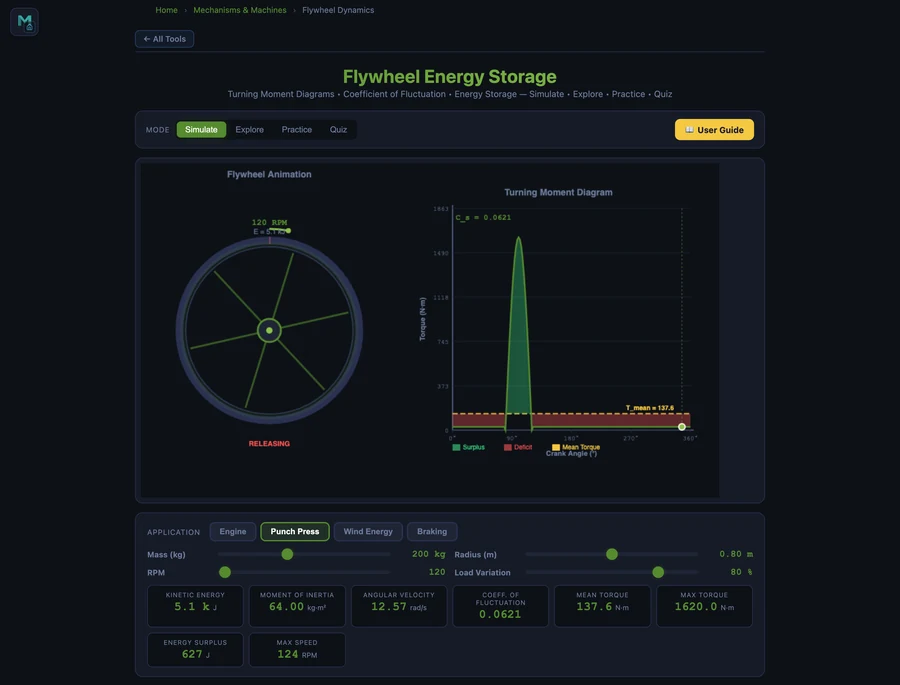

- A flywheel stores rotational kinetic energy E = ½Iω², where I is the moment of inertia (kg·m²) and ω the angular velocity (rad/s), buffering the speed fluctuations of intermittent machines like engines and punch presses.
- Moment of inertia is I = ½mr² for a solid disc and I = mr² for a rim-type flywheel, so a rim stores twice the energy of a disc of equal mass and radius.
- Size a flywheel with I = ΔE/(ω²·Cs), where ΔE is the energy fluctuation and Cs is the coefficient of fluctuation (≈0.002 for precision machines, 0.01–0.02 for engines, 0.10–0.20 for punch presses).
Why Every Reciprocating Machine Needs a Flywheel
Any machine driven by a reciprocating or intermittent power source — a piston engine, a punch press, a single-cylinder compressor — produces torque that varies continuously through each revolution. When the driving torque exceeds the load torque, the shaft accelerates; when the load exceeds the drive, the shaft slows down. Left unchecked, these speed fluctuations cause vibration, poor product quality, and premature wear on connected equipment.
A flywheel solves this by acting as a rotational energy buffer. During the power stroke it absorbs excess kinetic energy; between strokes it releases stored energy to keep the shaft turning smoothly. The NHIT VisualLab Flywheel Calculator animates this process on a live turning-moment diagram — shading surplus and deficit areas — and reports every key design quantity in real time.
The Core Flywheel Equations
Kinetic Energy Stored
The energy stored in any rotating body is the rotational analogue of ½mv²:
where I is the moment of inertia (kg·m²) and ω is the angular velocity (rad/s). At 600 rpm, ω = 2π × 600/60 = 62.83 rad/s.
Moment of Inertia
For a solid disc flywheel (uniform thickness, mass concentrated from centre to rim):
For a rim-type flywheel (most mass at the outer rim, as in older cast-iron designs):
The rim type achieves twice the moment of inertia for the same mass and radius, making it more energy-efficient at the cost of higher manufacturing complexity.
Coefficient of Fluctuation
The coefficient of fluctuation of speed quantifies the relative speed variation:
Typical design targets: Cs = 0.002 for precision spinning equipment, 0.01–0.02 for engines, 0.10–0.20 for punch presses and crushers.
Flywheel Sizing Equation
The energy the flywheel must absorb to limit speed fluctuation to Cs:
Rearranging to find the required moment of inertia for a known energy fluctuation ΔE:
This is the fundamental design equation. ΔE is the maximum area between the torque curve and the mean torque line — graphically visible as the shaded surplus/deficit regions on the turning-moment diagram.
Worked Example: Engine Flywheel
In the simulator's Engine preset with mass m = 80 kg, radius r = 0.5 m, speed N = 600 rpm, and 30% load variation:
- Moment of inertia: I = ½ × 80 × 0.5² = 10.00 kg·m²
- Angular velocity: ω = 2π × 600/60 = 62.83 rad/s
- Kinetic energy stored: E = ½ × 10 × 62.83² = 19.7 kJ
- Coefficient of fluctuation: Cs = 0.0175
- Energy surplus (ΔE): 691 J
Verify with the sizing equation: ΔE = I·ω²·Cs = 10 × 3947 × 0.0175 = 690 J ✓. The turning-moment diagram shows the four-stroke sinusoidal torque profile — the large power stroke (green surplus) and the three compression/exhaust strokes (red deficit).

Punch Press: A Much Harder Flywheel Problem
Switch the simulator to the Punch Press application and set m = 200 kg, r = 0.8 m, N = 120 rpm, 80% load variation. The moment of inertia jumps to I = ½ × 200 × 0.8² = 64.00 kg·m² — six times the engine flywheel — yet the coefficient of fluctuation rises to Cs = 0.0621, nearly four times the engine value.
Why does a punch press need such a large flywheel? The torque profile is almost a spike: near-zero for most of the revolution while the punch retracts and realigns, then a massive peak during the brief punch stroke. This extreme variation (high ΔE) combined with the permissible low-speed operation (small ω) forces a very large I. The turning-moment diagram shows this clearly — a narrow, tall green peak surrounded by a wide red deficit region.
Notice that even though the punch press flywheel is six times more massive and has a larger radius, its kinetic energy is only KE = ½ × 64 × (2π × 120/60)² = ½ × 64 × 157.9 = 5.1 kJ — less than the engine flywheel's 19.7 kJ. This illustrates that flywheel energy depends on the square of angular velocity: lower speed drastically reduces stored energy, forcing a compensating increase in mass and radius.
Disc vs Rim: Which Flywheel Type to Choose
For a target moment of inertia, designers choose between solid disc and rim-type flywheels based on space, weight, and cost constraints.
A solid cast-iron disc is cheap to manufacture and compact radially. For the engine example above (I = 10 kg·m²), a disc flywheel of r = 0.5 m needs m = 2I/r² = 80 kg. The same I from a rim flywheel at the same radius would need only m = I/r² = 40 kg — half the material. Rim-type flywheels dominated nineteenth-century steam engines for this reason. However, a rim flywheel's spokes must carry large centrifugal tension loads, and balancing a rim is harder than balancing a disc.
Modern engines almost universally use solid or near-solid disc flywheels (often incorporating the ring gear for the starter motor). Industrial punch presses may use rim-type designs for the mass savings at large diameters. The simulator lets you experiment with both geometry assumptions by treating the mass as an adjustable parameter.
Using the Flywheel Calculator
Open the Flywheel Energy Storage Simulator and explore:
- Speed sensitivity — keep all other parameters fixed and double the rpm from 300 to 600. Kinetic energy quadruples (E ∝ ω²), while Cs stays the same. This is why high-speed flywheels are so much more energy-dense.
- Mass vs radius trade-off — for a fixed I = 10 kg·m², compare a heavy small flywheel (m = 200 kg, r = 0.316 m, I = ½ × 200 × 0.1 = 10) versus a light large flywheel (m = 40 kg, r = 0.707 m). The rim velocity is very different — a key constraint for material fatigue.
- Wind energy application — switch to the Wind Energy app to see the irregular torque of a wind turbine. Notice how Cs and ΔE respond to gusty conditions modelled by high load variation.
- Braking application — the Braking app shows regenerative braking: energy flows from the shaft into the flywheel during deceleration and back out during acceleration, with the turning-moment diagram running in reverse.
Key Takeaways
- Energy scales with ω². Doubling flywheel speed quadruples stored energy — high-speed flywheels are dramatically more compact than low-speed ones for the same energy capacity.
- Rim-type flywheels store twice the energy per kilogram of a solid disc at the same radius, because Irim = mr² vs Idisc = ½mr².
- Cs target depends on the application. Precision machinery needs Cs ≈ 0.002; engines ≈ 0.01–0.02; punch presses ≈ 0.05–0.20.
- ΔE = Iω²Cs links sizing to performance. Rearrange to I = ΔE/(ω²·Cs) to find the minimum moment of inertia for a given fluctuation budget.
- Low speed means large flywheel. Because ω² appears in the denominator of the sizing equation, slow machines need disproportionately large (and heavy) flywheels.
Frequently Asked Questions
What is flywheel energy storage?
A flywheel stores kinetic energy in a rotating mass. The stored energy is E = ½Iω², where I is the moment of inertia (kg·m²) and ω is the angular velocity (rad/s). Flywheels smooth out speed fluctuations in machines with intermittent loads — engines, punch presses, and generators — by absorbing excess energy when driving torque exceeds load torque and releasing it when the load exceeds the drive.
What is the coefficient of fluctuation of a flywheel?
The coefficient of fluctuation of speed (Cs) is defined as Cs = (Nmax − Nmin) / Nmean. It quantifies how much the shaft speed varies during one revolution. Typical values range from 0.002 for precision spinning machinery to 0.2 for crushing machines. The energy absorbed to limit speed fluctuation is ΔE = I·ω²·Cs, which is the key equation for flywheel sizing.
What is the difference between a disc and rim-type flywheel?
A solid disc flywheel has I = ½mr². A rim-type flywheel concentrates mass at the outer radius, giving I ≈ mr² — twice the moment of inertia for the same mass and radius. Rim-type flywheels are more material-efficient but harder to manufacture and balance.
Why does a punch press need a larger flywheel than an engine?
A punch press has a highly intermittent load — near-zero torque for most of the cycle, then a very large torque spike during the punch stroke. This extreme load variation requires a flywheel with a large moment of inertia to absorb the energy surplus between strokes and deliver it during the punch. An engine has a more continuous torque profile and can use a smaller flywheel.
How do I calculate the required moment of inertia for a flywheel?
Use I = ΔE / (ω²·Cs), where ΔE is the maximum energy fluctuation (area between torque curve and mean torque line), ω is the mean angular velocity in rad/s, and Cs is the permissible coefficient of fluctuation. Then choose mass and radius: I = ½mr² for a disc, I = mr² for a rim type.